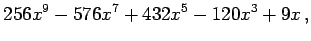

Inhalt Index DeskTop Bronstein

 Numerische Mathematik Approximation, Ausgleichsrechnung, Harmonische Analyse Tschebyscheff-Approximation Aufgabenstellung und Alternantensatz
Numerische Mathematik Approximation, Ausgleichsrechnung, Harmonische Analyse Tschebyscheff-Approximation Aufgabenstellung und Alternantensatz


| (19.194) |
| (19.195) |
| (19.196) |
Daraus folgt z.B.
| T2(x) | = | (19.197a) | |
| T4(x) | = | (19.197b) | |
| T6(x) | = | (19.197c) | |
| T7(x) | = | (19.197d) | |
| T8(x) | = | (19.197e) | |
| T9(x) | = |  | (19.197f) |
| T10(x) | = | (19.197g) |